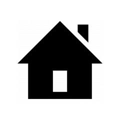
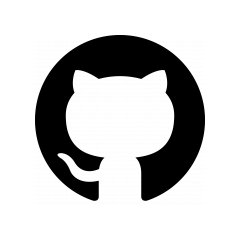
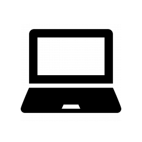

Ⅰ. Team Profile
" Welcome To Our Profile ! "

JOO
JEONG-HYEON
Software developer
- Nationality : Korea
- Spoken Languages :
Korean(native), English
- MBTI Type : ISFP

PHAM TRAN
TRUNG HIEU
Art Director
-Nationality : Vietnamese
-Spoken Languages :
Vietnamese(native), English
- MBTI Type : ENFP

NGUYEN THI
QUYNH GIANG
Designer
- Nationality : Vietnamese
- Spoken Languages :
Vietnamese(native), English
- MBTI Type : INTP

NGUYEN HA
MINH DUY
CEO & Founder
- Nationality : Vietnamese
- Spoken Languages :
Vietnamese(native), English
- MBTI Type : ENTJ
# Detail
Joo Jeonghyeon
"Please call me Joo for easy pronunciation!"
# RMIT Student ID: s3865746
# Nationality: Korea
# Spoken Languages: Korean(native), English
# Education
- I spent 1 years for EU course
- New to IT field !
# Personal hobbies
- listening to music
- playing the piano and ukulele
- taking a beautiful scenery picture
Nguyen Thi Quynh Giang
"That's a mouthful so friends call me Nina for short."
# RMIT Student ID: s3866617
# Nationality: Vietnamese
# Spoken Languages: Vietnamese(native), English (fluent).
# Education:
- 1 year spent in HCMIU studying Biotechnology(dropped)
- IT freshmam at RMIT
- Tester intern at Skedulo Vietnam (current)
# Personal hobbies:
Guitar player (classic music only), Former competitive swimmmer,
reader, and a Technology enthusiast.
+ There is another unbelievable fun fact that I love dogs and currently have 6 of them at home :)
Nguyen Ha Minh Duy
"Please call me Daniel."
# RMIT Student ID: s3852307
# Nationality: Vietnamese
# Spoken Languages: Vietnamese(native), English
# Education
- 3 years study in New Zealand
- Fresh man in RMIT
- Elected to University of Technology in New Zealand
# Personal hobbies
- listening to music
- Game lover
- Hypebeast
Pham Tran Trung Hieu
# RMIT Student ID: s3836565
# Nationality: Vietnamese
# Spoken Languages: Vietnamese(native), English
# Education
- Went to Vietnam Australia International School
& Saigon International College
- Freshman in RMIT
# Personal hobbies
- New technologies
- Video games
Ⅱ . Industry Data
Ⅲ . Tool

↑ Our Website

↑ Our Git Repository
[ Comments ]
Ⅳ . IT Work

↑ Check Out Our FAQ Page!
Ⅴ . IT Technologies
"We prepared this part in the format of HTML"
▽ Please click on the images below! ▽

Raspberry Pis, Arduinos
Raspberry Pi and Arduino are small computer devices that have been provided in cheap price for making less economic burden and efficiency.

Blockchain &
cryptocurrencies
Blockchain and Cryptocurrencies are both new technology in the early 20th century in science. Promising bring promises outstanding developments in the technology field.

Cyber-
security
Cybersecurity is one of the most historical areas in technology, it plays such a signicant role in other subjects of Technology and computer science.

Machine
Learning
Machine Learning is an innovative field in technology. In which computers are able to mimic the ability of human brains.
Ⅵ . Project Ideas
「CoffeeDear」
In the recent years, social media has been a game changer in the society, it obviously is going to have even more significant impacts on the future. According to https://www.smartinsights.com/, by the year of 2020, up to half of the population use some sort of social media and it is increasing exponentially. Based on that brief statistic, it is undeniable that social media is a necessity for many modern individuals. With that being said, our team had a discussion with each other and decided that our project idea would be a social media application, which provides service for a specific group of people. Particularly, our initial intention to target the population proportion who have coffee as a crucial part of their mornings (or even noon, afternoons, evenings). Or perhaps just as a hobby.
Coffee production is a massive industry with a long history of approximately 500 years and it is still a fascinating product that people talk about all the time. Parallelly, the coffee industry not only plays a vital role in the food and beverage field, it does have such great impact on the modern service industry. It is estimated that Coffee is the second-most traded commodity globally- https://dealsonhealth.net/blog/coffee-statistics/ . Let alone in the US, around 64% of the adult population drinks coffee daily. There is even some joke that coffee is the most popular ‘drug’ in the world. With all the evidence above, it can be seen how many people love their coffee habit. Thus, there will be a potential that the demand of coffee lovers desiring to connect as a virtual community is potentially really high. As a result, our social media platform will have a share in the technology market it the idea is carried out and delivered properly.
In terms of the production operation, it will basically help gather people who love coffee and promote them to share their experience of with each other on the specific types of coffee. Additionally, there is a long list of functions that can be thought of, however, their general purposes will be around the need of sharing information among the community. More specifically, since there are countless types of coffee, and each type has plenty variations based on different places, culture, materials, etc. and that unique information can be spread into the community for giving other some detailed insights. Our product will also strictly follow the characteristics of a good model of modern social media platforms, namely :-
# Responsive
: From 68% to 98% of users access various types of social networking sites through smartphones, so the responsive UI/UX means a lot.
# Decentralized
: Ideally, you should create a social media website, which doesn't depend on the central infrastructure. The best option is a p2p model
# Protected
: Also, your site must be secured from fake accounts and other similar unpleasant situations. So consider the protection factor: encryption/signature keys, blockchain data storage, etc. methods would come in handy.
# Non-anonymous
: The very essence of these services implies no anonymity. Moreover, to improve the efficiency of social networks, it's necessary to achieve correspondence between the profile and the real person (using a phone number, a scan of documents, etc.).
Source: Agilie
Ⅶ. Group Reflection & Feedback
0. Intro
First of all, the group consists of four people from really unique backgrounds and cognitive capability. There are particularly two males and two females, one of the girls is not Vietnamese native. Looking at the group and the process as a whole, it was definitely fantastic working together. However, we faced some common obstacles that shared the same pattern with teamwork in university and any other industries. Every factor that attributed to the outcome are worth analyzing and contemplating so that we can optimize the productivity in the upcoming co-operation on some other projects.
1. The good
In general, we have been collaborating with each other for roughly three weeks so far, and the outcome of the process is better than what we expected. Due to the diversity that we currently have, there are many out-of-the-box ideas given by each member, and thus some really interesting and enthusiastic conversations. Each member has their own authentic and unique idea that may have contributed to the big picture that we came up with. And because each team member has a different field that they are good at, we were able to compensate for each other's shortcomings. Also everyone has tried to make a conversation in English, even though our nationality and mother tongue are different, there have been nearly no problems in communicating.
2. The bad
Since the baseline of the group is not totally a clear surface to start with, we did struggle a bit initially, in the sense of cultural and individual interest differences. Moreover, there are conflicts among the schedule of the group, one of the four is working as an intern so finding the availability for meetings was not as easy as it should have been. However, we found other means of communicating as alternatives. Thus the problem minimized itself. Additionally, the diversity can be considered a two-faced factor that not only has positive impacts but also a negative ones unfortunately. To be specific, there were some minor misunderstandings within the conversation because people are not completely comfortable with eliminating the mother tongues. Sometimes, we found ourselves being prone to delivering the information using our native languages, but that was absolutely neglectable due to the perfect English fluency of each member.
3. The Fix
By enhancing the current upsides, moderating the downsides, alongside neutralizing the differences, there was room for development among the team. Even though we could have done better in terms of finalizing the product, we have done the best at our most convenience. Lessons learned will be valuable for the future teamwork during the academic period, perhaps for the work in the industry as well.
Individual Feedback
# Myself
I worked mainly in the CSS and HTML part. To talk about good things I did, I edited the details sensitively. However, compared with others, I suppose that I didn’t work hard and much like other members. And my shortcoming is I sometimes didn’t participate in face to face meetings. So next time, I should fix this habit to avoid giving an obstacle to other members.
# Giang
Above all,Giang conducted our group as a GOOD leader. So When our team had too many tasks or confronted complex situations, she helped us by providing several sites or her knowledge and made it simple. And since she is very professional with IT and creative and organized so that it made our project high-quality and variously. Also, whenever we needed to fix our work or faced problems, she conversed with teammates in a friendly attitude.
# Hiue
First of all, Hieu is a necessary teammate. Because after we separate our part, he accomplished his own part without complaint. Moreover, he was cooperative and reactive to conversation . Also Hieu is analytical and subtle and has a diverse view. This personality is very significant to our group. He checked the fact that ours was plagiarised or not. Also, whenever we needed something new-creative ideas, he suggested his opinion positively.
# Duy
Overall, Duy can be explained as intelligent. He has various knowledge about IT, so whenever our teammates had some problem,he always suggested his opinion and solution. Moreover, he is very creative and sociable. This point made our team have a lot of conversation. Finally, Duy is very cooperative and reactive to our conversation, so that he made our group’s mood smooth and lively.
# Myself
# Joo
The first thing that needs to be said is Joo plays an indispensable role in our group projects. She and Giang take the most care of the design and coding part of the projects. Furthermore, she is capable of gaining new knowledge by herself and apply them to the tasks to make it plentiful and beautiful. To conclude, Joo is an enthusiastic and dependable person.
# Giang
From my perspective, Giang is a good leader who is passionate about the projects since all of us agree on her idea. She takes care of all the deadlines and notices with us whenever some part is not finished. In addition, she participant a lot on the website itself and create an alluring layout for the project that makes it easier for each teammate to put their information on which shows off her hard work.
# Duy
To begin with, Duy is an easy-going, confident, competitive, and patient person. Duy is an industrious person since he could listen to the interview and re-write it to a complete script, which was a massive part of the projects. Duy is really interested in develops himself and always reaches out to people for more information or something he could learn from it. Furthermore, I like Duy since we work well together.
# Myself
# Joo
Overall, Joo is a productive person and a big contributor for the project. She always has innovative ideas in the sense of designing and making the interface more user-friendly. Moreover, she is completely capable of working independently, and constantly seeking new knowledge by herself. If she is labeled, it will be “the initiative”.Thus, apparently she is comfortable using supported tools and writing code for the assignment.
# Hieu
In general, Hieu is the spice of the team. He contributed to some essential parts of the project and is definitely irreplaceable. Though his nature is not necessarily energetic, he helped put the group pointing out details that we may have missed. Therefore, he eliminated many obstacles on the way for us. In many situations, however, he could have been more decisive and expressive.
# Duy
First, Duy always has intrinsic motivations that keep him up with the project progress, he can be valued as the most active person among all. Though, there are some shortcomings about him. Since his personality is more prone to extroversion, he sometimes exaggerates things that are resolvable. If there is something he can totally improve, that should be the ability of self-teaching, that is one of the essential skills for people whose jobs are tech-related.
# Myself
# Joo
Joo is a passionate teammate that our team must have. She brings fresh new ideas to our team and always finishes her job on time. And she is capable of working individually and multi-tasking at the same time, which makes her a very valuable teammate. Her strength is about coding and css. But she needs to improve her communication skill because it is an essential skill in the future, especially IT jobs.
# Giang
As a leader, Giang fulfilled her responsibility. She always rushing other teammates to fulfill their duty with quality content.She also has the ability to lead other teammates through obstacles, and her well communicating helps us a lot about the assignment. Her strength is self-teaching and time-management, she might be the leader that I want to follow up to lead success. She is our key to success for our team.
# Hiue
Hieu is the guy who silently contributes to the project. Hieu brings us useful information about the project and useful tools that help us to do the coding. He also is a person who corrects others' teammates' errors and is always aiming for perfection in our project .But in my opinion, I think Hieu needs to improve his communication skill and contribute more positive ideas for the team.